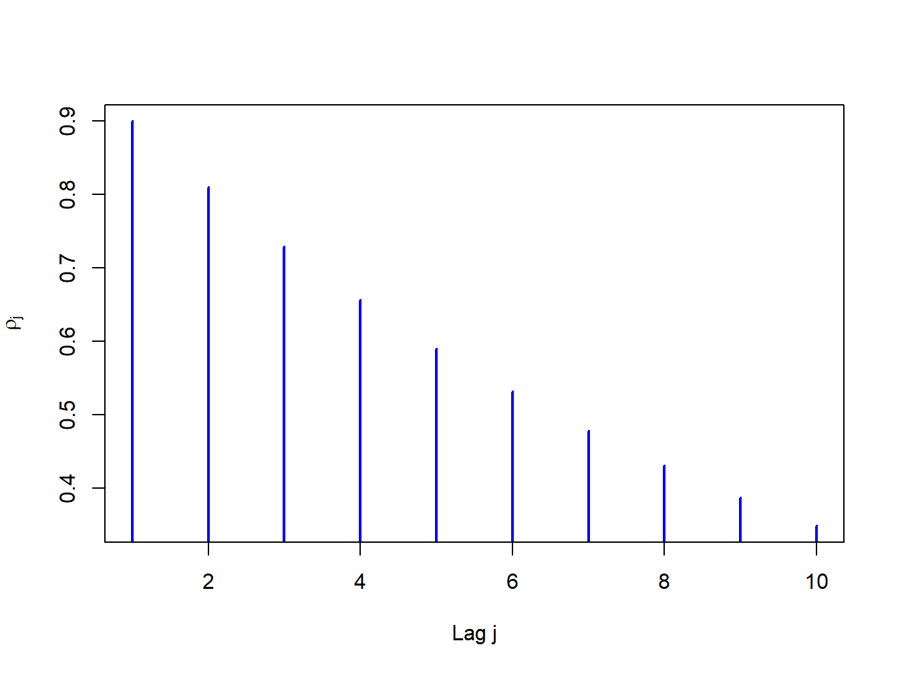
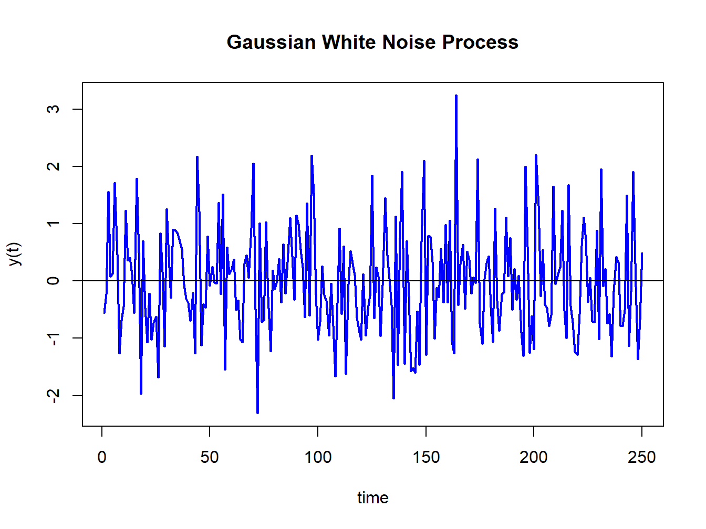
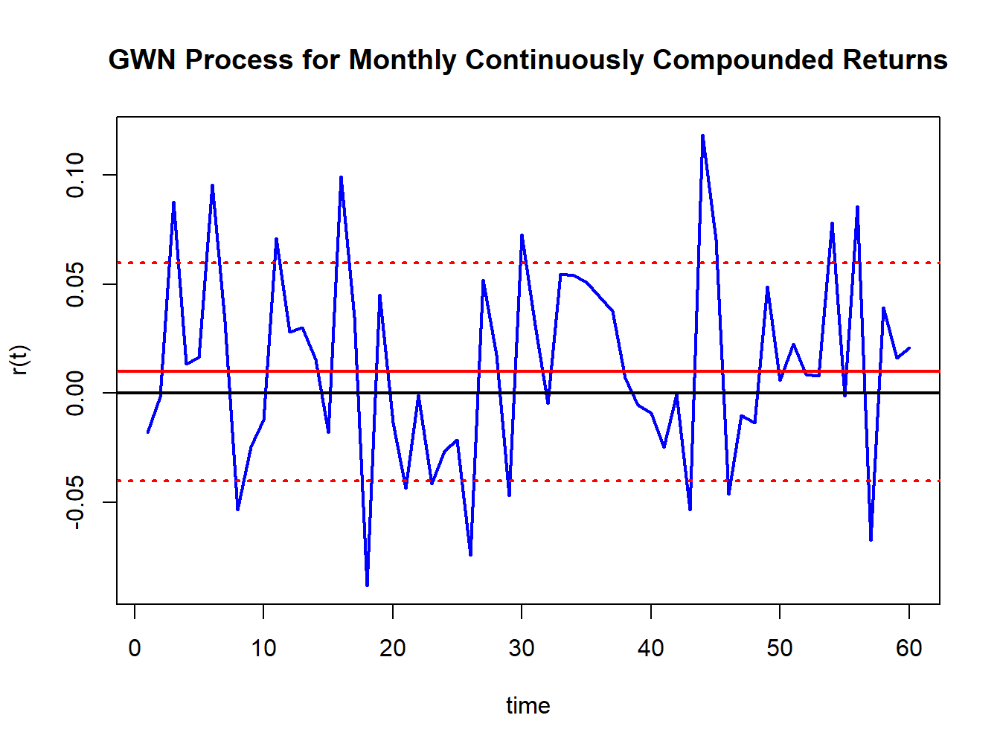
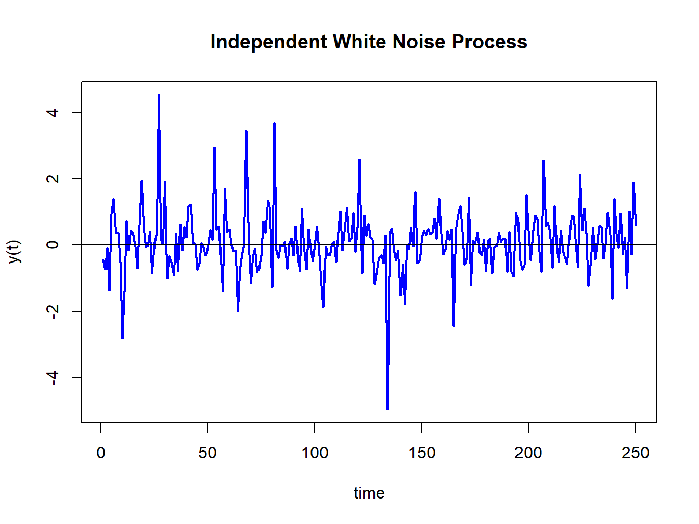
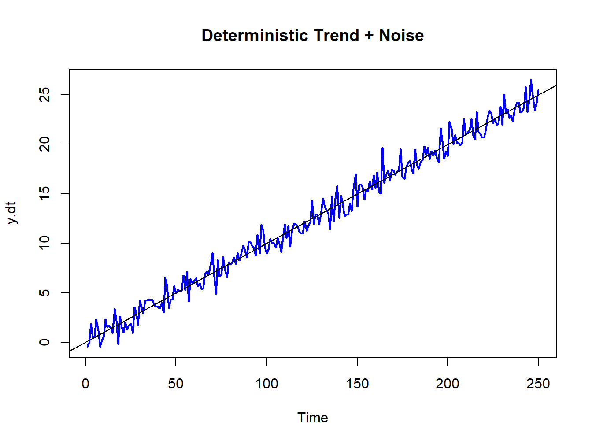
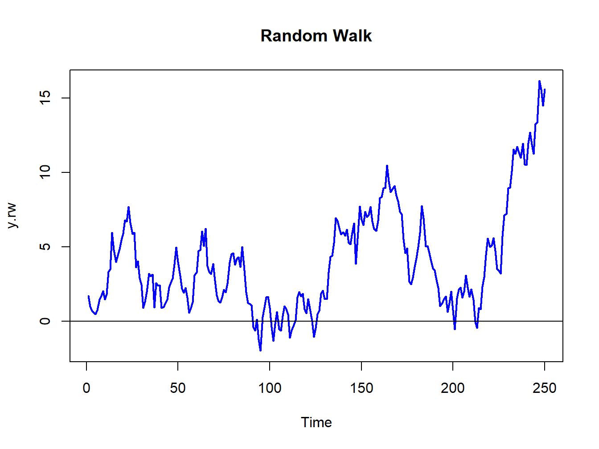
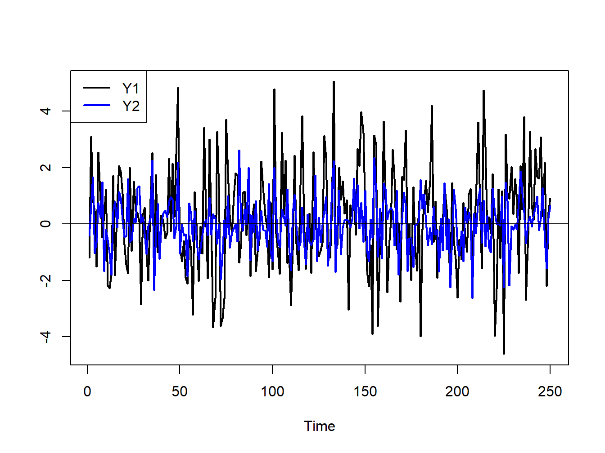
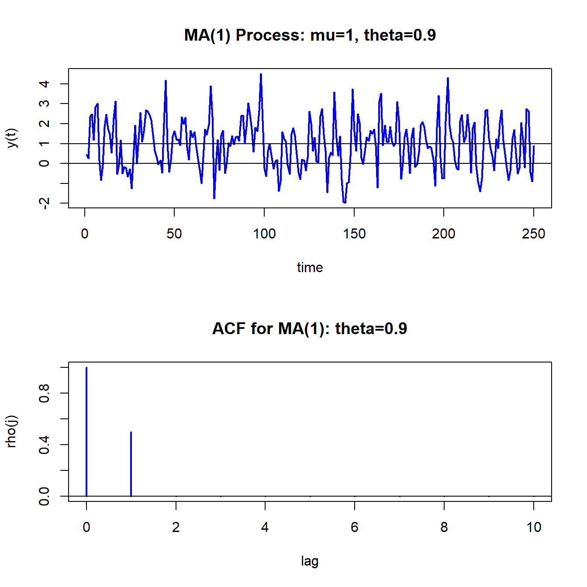
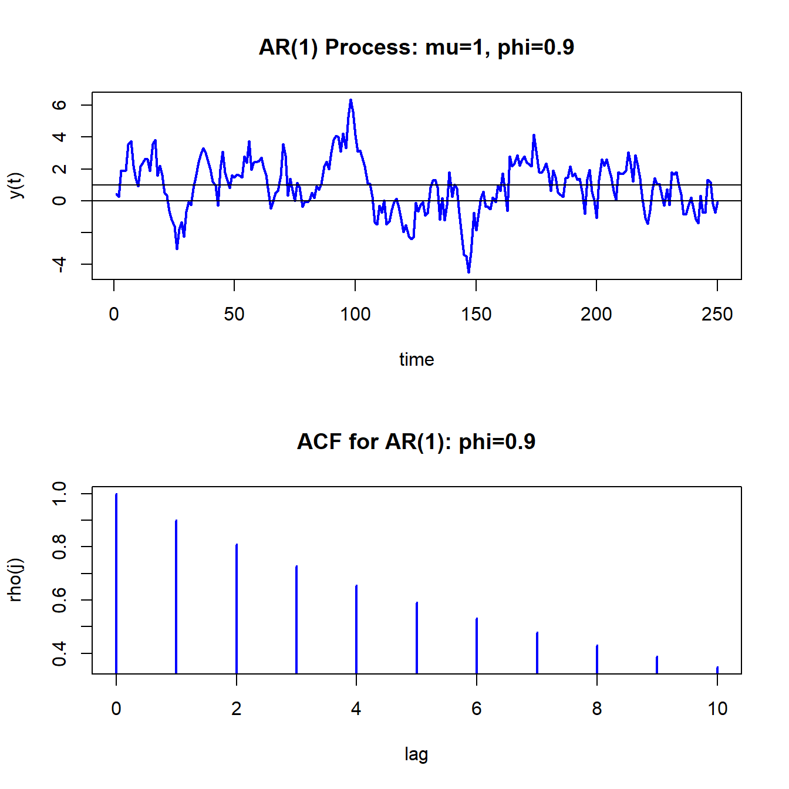
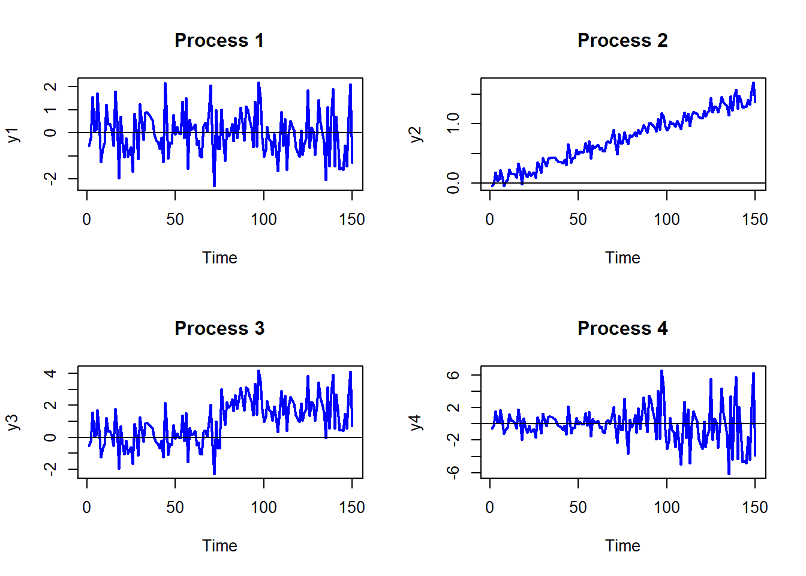

Code
rho = 0.9
rhoVec = (rho)^(1:10)
ts.plot(rhoVec, type="h", lwd=2, col="blue", xlab="Lag j",
ylab=expression(rho[j]))
Last updated on September 4, 2026
Copyright © Eric Zivot 2026
Financial variables such as asset prices and returns are naturally ordered by time. That is, these variables are time series variables. When we construct returns, the time index or data frequency becomes the investment horizon associated with the return. Typical data frequencies are daily, weekly, monthly and annual. In building probability models for time series variables, the time ordering of the data matters because we may think there are important temporal dependencies among the variables. For example, we might have reason to believe that the return on an asset this month is correlated with the return on the same asset in the previous month. This autocorrelation can only be defined if the time ordering of the data is preserved. A major complication in analyzing time series data is that the usual assumption of random sampling from a common population is not appropriate because it does not allow for any kind of time dependence in the time series variables. We would like to retain the notion that the observed data come from some population model, perhaps with time-invariant parameters, but we would like to allow the variables to have time dependencies. Fortunately, we can do this if the time series data come from a stationary time series process.
This chapter reviews some basic times series concepts that are essential for describing and modeling financial time series. Section 4.1 defines univariate time series processes and introduces the important concepts of stationarity and ergodicity. Covariance stationary time series processes are defined, which gives meaning to measuring linear time dependence using autocorrelation. The benchmark Gaussian White Noise process and related processes are introduced and illustrated using R. Some common non-stationary time series processes are also discussed including the famous random walk model. Section 4.2 introduces covariance stationary multivariate time series process. Such processes allow for dynamic interactions among groups of time series variables. Section 4.3 discusses time series model building and introduces the class of univariate autoregressive-moving average time series models and multivariate vector autoregression models. The properties of some simple models are derived and it is shown how to simulate observations from these models using R. The chapter concludes with a brief discussion of forecasting from time series models.
The R packages used in this chapter are mvtnorm and vars. Make sure these packages are installed and loaded before running the R examples in this chapter.
Definition 4.1 (Stochastic Process) A discrete-time stochastic process or time series process \[ \{\ldots,Y_{1},Y_{2},\ldots,Y_{t},Y_{t+1},\ldots\}=\{Y_{t}\}_{t=-\infty}^{\infty} \] is a sequence of random variables indexed by time \(t\)1.
In most applications, the time index is a regularly spaced index representing calendar time (e.g., days, months, years, etc.) but it can also be irregularly spaced representing event time (e.g., intra-day transaction times). In modeling time series data, the ordering imposed by the time index is important because we often would like to capture the temporal relationships, if any, between the random variables in the stochastic process. In random sampling from a population, the ordering of the random variables representing the sample does not matter because they are independent.
Definition 4.2 (Realization of Stochastic Process) A realization of a stochastic process with \(T\) observations is the sequence of observed data \[ \{Y_{1}=y_{1},Y_{2}=y_{2},\ldots,Y_{T}=y_{T}\}=\{y_{t}\}_{t=1}^{T}. \]
The goal of time series modeling is to describe the probabilistic behavior of the underlying stochastic process that is believed to have generated the observed data in a concise way. In addition, we want to be able to use the observed sample to estimate important characteristics of a time series model such as measures of time dependence. In order to do this, we need to make a number of assumptions regarding the joint behavior of the random variables in the stochastic process such that we may treat the stochastic process in much the same way as we treat a random sample from a given population.
We often describe random sampling from a population as a sequence of independent, and identically distributed (iid) random variables \(X_{1},X_{2}\ldots\) such that each \(X_{i}\) is described by the same probability distribution \(F_{X}\), and write \(X_{i}\sim F_{X}\). With a time series process, we would like to preserve the identical distribution assumption but we do not want to impose the restriction that each random variable in the sequence is independent of all of the other variables. In many contexts, we would expect some dependence between random variables close together in time (e.g, \(X_{1}\), and \(X_{2})\) but little or no dependence between random variables far apart in time (e.g., \(X_{1}\) and \(X_{100})\). We can allow for this type of behavior using the concepts of stationarity and ergodicity.
We start with the definition of strict stationarity.
Definition 4.3 (Strict stationarity) A stochastic process \(\{Y_{t}\}\) is strictly stationary if, for any given finite integer \(r\) and for any set of subscripts \(t_{1},t_{2},\ldots,t_{r}\) the joint distribution of \((Y_{t_{1}},Y_{t_{2}},\ldots,Y_{t_{r}})\) depends only on \(t_{1}-t,t_{2}-t,\ldots,t_{r}-t\) but not on \(t\). In other words, the joint distribution of \((Y_{t_{1}},Y_{t_{2}},\ldots,Y_{t_{r}})\) is the same as the joint distribution of \((Y_{t_{1}-t},Y_{t_{2}-t},\ldots,Y_{t_{r}-t})\) for any value of \(t\).
In simple terms, the joint distribution of random variables in a strictly stationary stochastic process is time invariant. For example, the joint distribution of \((Y_{1},Y_{5},Y_{7})\) is the same as the distribution of \((Y_{12},Y_{16},Y_{18})\). Just like in an iid sample, in a strictly stationary process all of the individual random variables \(Y_{t}\) (\(t=-\infty,\ldots,\infty\)) have the same marginal distribution \(F_{Y}\). This means they all have the same mean, variance etc., assuming these quantities exist. However, assuming strict stationarity does not make any assumption about the correlations between \(Y_{t},Y_{t_{1}},\ldots,Y_{t_{r}}\) other than that the correlation between \(Y_{t}\) and \(Y_{t_{r}}\) only depends on \(t-t_{r}\) (the time between \(Y_{t}\) and \(Y_{t_{r}})\) and not on \(t\). That is, strict stationarity allows for general temporal dependence between the random variables in the stochastic process.
A useful property of strict stationarity is that it is preserved under general transformations, as summarized in the following proposition.
Proposition 4.1 Let \(\{Y_{t}\}\) be strictly stationary and let \(g(\cdot)\) be any function of the elements in \(\{Y_{t}\}\). Then \(\{g(Y_{t})\}\), is also strictly stationary.
For example, if \(\{Y_{t}\}\) is strictly stationary then \(\{Y_{t}^{2}\}\) and \(\{Y_{t}Y_{t-1}\}\) are also strictly stationary.
The following are some simple examples of strictly stationary processes.
Example 4.1 (iid sequence) If \(\{Y_{t}\}\) is an iid sequence, then it is strictly stationary. \(\blacksquare\)
Example 4.2 (Non iid sequence) Let \(\{Y_{t}\}\) be an iid sequence and let \(X\sim N(0,1)\) independent of \(\{Y_{t}\}\). Define \(Z_{t}=Y_{t}+X\). The sequence \(\{Z_{t}\}\) is not an independent sequence (because of the common \(X)\) but is an identically distributed sequence and is strictly stationary. \(\blacksquare\)
Strict stationarity places very strong restrictions on the behavior of a time series. A related concept that imposes weaker restrictions and is convenient for time series model building is covariance stationarity (sometimes called weak stationarity).
Definition 4.4 (Covariance stationarity) A stochastic process \(\{Y_{t}\}\) is covariance stationary if
The term \(\gamma_{j}\) is called the \(j^{\textrm{th}}\) order autocovariance. The \(j^{\textrm{th}}\) order autocorrelation is defined as: \[ \rho_{j}=\frac{\mathrm{cov}(Y_{t},Y_{t-j})}{\sqrt{\mathrm{var}(Y_{t})\mathrm{var}(Y_{t-j})}}=\frac{\gamma_{j}}{\sigma^{2}}. \tag{4.1}\]
The autocovariances, \(\gamma_{j},\) measure the direction of linear dependence between \(Y_{t}\) and \(Y_{t-j}\). The autocorrelations, \(\rho_{j}\), measure both the direction and strength of linear dependence between \(Y_{t}\) and \(Y_{t-j}\). With covariance stationarity, instead of assuming the entire joint distribution of a collection of random variables is time invariant we make a weaker assumption that only the mean, variance and autocovariances of the random variables are time invariant. A strictly stationary stochastic process \(\{Y_{t}\}\) such that \(\mu\), \(\sigma^{2}\), and \(\gamma_{ij}\) exist is a covariance stationary stochastic process. However, a covariance stationary process need not be strictly stationary.
The autocovariances and autocorrelations are measures of the linear temporal dependence in a covariance stationary stochastic process. A graphical summary of this temporal dependence is given by the plot of \(\rho_{j}\) against \(j\), and is called the autocorrelation function (ACF). Figure 4.1 illustrates an ACF for a hypothetical covariance stationary time series with \(\rho_{j}=(0.9)^{j}\) for \(j=1,2,\ldots,10\) created with
rho = 0.9
rhoVec = (rho)^(1:10)
ts.plot(rhoVec, type="h", lwd=2, col="blue", xlab="Lag j",
ylab=expression(rho[j]))
For this process the strength of linear time dependence decays toward zero geometrically fast as \(j\) increases.
The definition of covariance stationarity requires that \(E[Y_{t}]<\infty\) and \(\mathrm{var}(Y_{t})<\infty.\) That is, \(E[Y_{t}]\) and \(\mathrm{var}(Y_{t})\) must exist and be finite numbers. This is true if \(Y_{t}\) is normally distributed. However, it is not true if, for example, \(Y_{t}\) has a Student’s t distribution with one degree of freedom.2 Hence, a strictly stationary stochastic process \(\{Y_{t}\}\) where the (marginal) pdf of \(Y_{t}\) (for all \(t\)) has very fat tails may not be covariance stationary.
Example 4.3 (Gaussian White Noise) Let \(Y_{t}\sim iid\) \(N(0,\sigma^{2})\). Then \(\{Y_{t}\}\) is called a Gaussian white noise (GWN) process and is denoted \(Y_{t}\sim\mathrm{GWN}(0,\sigma^{2})\). Notice that: \[\begin{align*} E[Y_{t}] & =0\textrm{ independent of }t,\\ \mathrm{var}(Y_{t}) & =\sigma^{2}\textrm{ independent of }t,\\ \mathrm{cov}(Y_{t},Y_{t-j}) & =0\text{ (for }j>0)\text{ independent of }t\textrm{ for all }j, \end{align*}\] so that \(\{Y_{t}\}\) satisfies the properties of a covariance stationary process. The defining characteristic of a GWN process is the lack of any predictable pattern over time in the realized values of the process. The term white noise comes from the electrical engineering literature and represents the absence of any signal.3
Simulating observations from a GWN process in R is easy: just simulate iid observations from a normal distribution. For example, to simulate \(T=250\) observations from the GWN(0,1) process use:
set.seed(123)
y = rnorm(250)The simulated iid N(0,1) values are generated using the rnorm() function. The command set.seed(123) initializes R’s internal random number generator using the seed value 123. Every time the random number generator seed is set to a particular value, the random number generator produces the same set of random numbers. This allows different people to create the same set of random numbers so that results are reproducible. The simulated data is illustrated in Figure 4.2 created using:
ts.plot(y,main="Gaussian White Noise Process",xlab="time",
ylab="y(t)", col="blue", lwd=2)
abline(h=0)
The function ts.plot() creates a time series line plot with a dummy time index. An equivalent plot can be created using the generic plot() function with optional argument type="l". The data in Figure 4.2 fluctuate randomly about the mean value zero and exhibit a constant volatility of one (typical magnitude of a fluctuation about zero). There is no visual evidence of any predictable pattern in the data. \(\blacksquare\)
Example 4.4 (GWN model for continuously compounded returns) Let \(r_{t}\) denote the continuously compounded monthly return on Microsoft stock and assume that \(r_{t}\sim\mathrm{iid}\,N(0.01,\,(0.05)^{2})\). We can represent this distribution in terms of a GWN process as follows \[ r_{t}=0.01+\varepsilon_{t},\,\varepsilon_{t}\sim\mathrm{GWN}(0,\,(0.05)^{2}). \] Here, \(r_{t}\) is constructed as a \(\mathrm{GWN}(0,\sigma^{2})\) process plus a constant. Hence, \(\{r_{t}\}\) is a GWN process with a non-zero mean: \(r_{t}\sim\mathrm{GWN}(0.01,\,(0.05)^{2}).\) \(T=60\) simulated values of \(\{r_{t}\}\) are computed using:
set.seed(123)
y = rnorm(60, mean=0.01, sd=0.05)
ts.plot(y,main="GWN Process for Monthly Continuously Compounded Returns",
xlab="time",ylab="r(t)", col="blue", lwd=2)
abline(h=c(0,0.01,-0.04,0.06), lwd=2,
lty=c("solid","solid","dotted","dotted"),
col=c("black", "red", "red", "red"))
and are illustrated in Figure 4.3. Notice that the returns fluctuate around the mean value of \(0.01\) (solid red line) and the size of a typical deviation from the mean is about \(0.05\). The red dotted lines show the values \(0.1 \pm 0.05\) .
An implication of the GWN assumption for monthly returns is that non-overlapping multi-period returns are also GWN. For example, consider the two-month return \(r_{t}(2)=r_{t}+r_{t-1}\). The non-overlapping process \(\{r_{t}(2)\}=\{...,r_{t-2}(2),r_{t}(2),r_{t+2}(2),...\}\) is GWN with mean \(E[r_{t}(2)]=2\cdot\mu=0.02\), variance \(\mathrm{var}(r_{t}(2))=2\cdot\sigma^{2}=0.005\), and standard deviation \(\mathrm{sd}(r_{t}(2))=\sqrt{2}\sigma=0.071\). \(\blacksquare\)
Example 4.5 (Independent white noise) Let \(Y_{t}\sim\mathrm{iid}\) \((0,\sigma^{2})\). Then \(\{Y_{t}\}\) is called an independent white noise (IWN) process and is denoted \(Y_{t}\sim\mathrm{IWN}(0,\sigma^{2})\). The difference between GWN and IWN is that with IWN we don’t specify that all random variables are normally distributed. The random variables can have any distribution with mean zero and variance \(\sigma^{2}.\) To illustrate, suppose \(Y_{t}=\frac{1}{\sqrt{3}}\times t_{3}\) where \(t_{3}\) denotes a Student’s t distribution with \(3\) degrees of freedom. This process has \(E[Y_{t}]=0\) and \(\mathrm{var}(Y_{t})=1.\) Figure 4.4 shows simulated observations from this process created using the R commands
set.seed(123)
y = (1/sqrt(3))*rt(250, df=3)
ts.plot(y, main="Independent White Noise Process", xlab="time", ylab="y(t)",
col="blue", lwd=2)
abline(h=0)
The simulated IWN process resembles the GWN in Figure 4.4 but has more extreme observations. \(\blacksquare\)
Example 4.6 (Weak white noise) Let \(\{Y_{t}\}\) be a sequence of uncorrelated random variables each with mean zero and variance \(\sigma^{2}\). Then \(\{Y_{t}\}\) is called a weak white noise (WWN) process and is denoted \(Y_{t}\sim\mathrm{WWN}(0,\sigma^{2})\). With a WWN process, the random variables are not independent, only uncorrelated. This allows for potential non-linear temporal dependence between the random variables in the process. \(\blacksquare\)
In a covariance stationary stochastic process it is assumed that the means, variances and autocovariances are independent of time. In a non-stationary process, one or more of these assumptions is not true. The following examples illustrate some typical non-stationary time series processes.
Example 4.7 (Deterministically trending process) Suppose \(\{Y_{t}\}\) is generated according to the deterministically trending process: \[\begin{align*} Y_{t} & =\beta_{0}+\beta_{1}t+\varepsilon_{t},~\varepsilon_{t}\sim\mathrm{GWN}(0,\sigma_{\varepsilon}^{2}),\\ t & =0,1,2,\ldots \end{align*}\] Then \(\{Y_{t}\}\) is nonstationary because the mean of \(Y_{t}\) depends on \(t\): \[ E[Y_{t}]=\beta_{0}+\beta_{1}t. \] Figure 4.5 shows a realization of this process with \(\beta_{0}=0,\beta_{1}=0.1\) and \(\sigma_{\varepsilon}^{2}=1\) created using the R commands:
set.seed(123)
e = rnorm(250)
y.dt = 0.1*seq(1,250) + e
ts.plot(y.dt, lwd=2, col="blue", main="Deterministic Trend + Noise")
abline(a=0, b=0.1)
Here the non-stationarity is created by the deterministic trend \(\beta_{0}+\beta_{1}t\) in the data. The non-stationary process \(\{Y_{t}\}\) can be transformed into a stationary process by simply subtracting off the trend: \[ X_{t}=Y_{t}-\beta_{0}-\beta_{1}t=\varepsilon_{t}\sim\mathrm{GWN}(0,\sigma_{\varepsilon}^{2}). \] The detrended process \(X_{t}\sim\mathrm{GWN}(0,\sigma_{\varepsilon}^{2})\) is obviously covariance stationary. \(\blacksquare\)
Example 4.8 (Random walk) A random walk (RW) process \(\{Y_{t}\}\) is defined as: \[\begin{align*} Y_{t} & =Y_{t-1}+\varepsilon_{t},~\varepsilon_{t}\sim\mathrm{GWN}(0,\sigma_{\varepsilon}^{2}),\\ & Y_{0}\textrm{ is fixed (non-random)}. \end{align*}\] By recursive substitution starting at \(t=1\), we have: \[\begin{align*} Y_{1} & =Y_{0}+\varepsilon_{1},\\ Y_{2} & =Y_{1}+\varepsilon_{2}=Y_{0}+\varepsilon_{1}+\varepsilon_{2},\\ & \vdots\\ Y_{t} & =Y_{t-1}+\varepsilon_{t}=Y_{0}+\varepsilon_{1}+\cdots+\varepsilon_{t}\\ & =Y_{0}+\sum_{j=1}^{t}\varepsilon_{j}. \end{align*}\] Now, \(E[Y_{t}]=Y_{0}\) which is independent of \(t\). However, \[ \mathrm{var}(Y_{t})=\mathrm{var}\left(\sum_{j=1}^{t}\varepsilon_{j}\right)=\sum_{j=1}^{t}\sigma_{\varepsilon}^{2}=\sigma_{\varepsilon}^{2}\times t, \] which depends on \(t\), and so \(\{Y_{t}\}\) is not stationary.
Figure 4.6 shows a realization of the RW process with \(Y_{0}=0\) and \(\sigma_{\varepsilon}^{2}=1\) created using the R commands:
set.seed(321)
e = rnorm(250)
y.rw = cumsum(e)
ts.plot(y.rw, lwd=2, col="blue", main="Random Walk")
abline(h=0)
The RW process looks much different from the GWN process in Figure 4.2. As the variance of the process increases linearly with time, the uncertainty about where the process will be at a given point in time increases with time.
Although \(\{Y_{t}\}\) is non-stationary, a simple first-differencing transformation, however, yields a covariance stationary process: \[ X_{t}=Y_{t}-Y_{t-1}=\varepsilon_{t}\sim\mathrm{GWN}(0,\sigma_{\varepsilon}^{2}). \]
\(\blacksquare\)
Example 4.9 (Random walk with drift model for log stock prices) Let \(r_{t}\) denote the continuously compounded monthly return on Microsoft stock and assume that \(r_{t}\sim\mathrm{GWN}(\mu,\,\sigma^{2})\). Since \(r_{t}=\ln(P_{t}/P_{t-1})\) it follows that \(\ln P_{t}=\ln P_{t-1}+r_{t}\). Now, re-express \(r_{t}\) as \(r_{t}=\mu+\varepsilon_{t}\) where \(\varepsilon_{t}\sim\mathrm{GWN}(0,\sigma^{2}).\) Then \(lnP_{t}=lnP_{t-1}+\mu+\varepsilon_{t}.\) By recursive substitution we have \(lnP_{t}=lnP_{0}+\mu t+\sum_{t=1}^{t}\varepsilon_{t}\) and so \(\ln P_{t}\) follows a random walk process with drift value \(\mu\). Here, \(E[lnP_{t}]=\mu t\) and \(\mathrm{var}(lnP_{t})=\sigma^{2}t\) so \(lnP_{t}\) is non-stationary because both the mean and variance depend on \(t\). In this model, prices, however, do not follow a random walk since \(P_{t}=e^{\ln P_{t}}=P_{t-1}e^{r_{t}}\). \(\blacksquare\)
In a strictly stationary or covariance stationary stochastic process no assumption is made about the strength of dependence between random variables in the sequence. For example, in a covariance stationary stochastic process it is possible that \(\rho_{1}=\mathrm{cor}(Y_{t},Y_{t-1})=\rho_{100}=\mathrm{cor}(Y_{t},Y_{t-100})=0.5\), say. However, in many contexts it is reasonable to assume that the strength of dependence between random variables in a stochastic process diminishes the farther apart they become. That is, \(\rho_{1}>\rho_{2}\cdots\) and that eventually \(\rho_{j}=0\) for \(j\) large enough. This diminishing dependence assumption is captured by the concept of ergodicity.
Definition 4.5 (Ergodicity (intuitive definition)) Intuitively, a stochastic process \(\{Y_{t}\}\) is ergodic if any two collections of random variables partitioned far apart in the sequence are essentially independent.
The formal definition of ergodicity is highly technical and requires advanced concepts in probability theory. However, the intuitive definition captures the essence of the concept. The stochastic process \(\{Y_{t}\}\) is ergodic if \(Y_{t}\) and \(Y_{t-j}\) are essentially independent if \(j\) is large enough.
If a stochastic process \(\{Y_{t}\}\) is covariance stationary and ergodic then strong restrictions are placed on the joint behavior of the elements in the sequence and on the type of temporal dependence allowed.
Example 4.10 (White noise processes) If \(\{Y_{t}\}\) is GWN or IWN then it is both covariance stationary and ergodic. \(\blacksquare\)
Example 4.11 (Covariance stationary but not ergodic process (White 1984 page 41)) Let \(Y_{t}\sim\mathrm{GWN}(0,1)\) and let \(X\sim N(0,1)\) independent of \(\{Y_{t}\}\). Define \(Z_{t}=Y_{t}+X\). Then \(\{Z_{t}\}\) is covariance stationary but not ergodic. To see why \(\{Z_{t}\}\) is not ergodic, note that for all \(j>0\): \[\begin{align*} \mathrm{var}(Z_{t}) & =\mathrm{var}(Y_{t}+X)=1+1=2,\\ \gamma_{j} & =\mathrm{cov}(Y_{t}+X,Y_{t-j}+X)=\mathrm{cov}(Y_{t},Y_{t-j})+\mathrm{cov}(Y_{t},X)+\mathrm{cov}(Y_{t-j},X)+\mathrm{cov}(X,X)\\ & =\mathrm{cov}(X,X)=\mathrm{var}(X)=1,\\ \rho_{j} & =\frac{1}{2}\text{ for all }j. \end{align*}\] Hence, the correlation between random variables separated far apart does not eventually go to zero and so \(\{Z_{t}\}\) cannot be ergodic. \(\blacksquare\)
Consider \(n\) time series variables \(\{Y_{1t}\},\ldots,\{Y_{nt}\}\). A multivariate time series is the \((n\times1)\) vector time series \(\{\mathbf{Y}_{t}\}\) where the \(i^{th}\) row of \(\{\mathbf{Y}_{t}\}\) is \(\{Y_{it}\}\). That is, for any time \(t\), \(\mathbf{Y}_{t}=(Y_{1t},\ldots,Y_{nt})^{\prime}\). Multivariate time series analysis is used when one wants to model and explain the interactions and co-movements among a group of time series variables. In finance, multivariate time series analysis is used to model systems of asset returns, asset prices, exchange rates, the term structure of interest rates, and economic variables, etc.. Many of the time series concepts described previously for univariate time series carry over to multivariate time series in a natural way. Additionally, there are some important time series concepts that are particular to multivariate time series. The following sections give the details of these extensions.
A multivariate time series \(\{\mathbf{Y}_{t}\}\) is covariance stationary and ergodic if all of its component time series are stationary and ergodic. The mean of \(\mathbf{Y}_{t}\) is defined as the \((n\times1)\) vector \[ E[\mathbf{Y}_{t}]=(\mu_{1},\ldots,\mu_{n})^{\prime}=\boldsymbol{\mu}, \] where \(\mu_{i}=E[Y_{it}]\) for \(i=1,\ldots,n\). The variance/covariance matrix of \(\mathbf{Y}_{t}\) is the \((n\times n)\) matrix \[\begin{align*} \mathrm{var}(\mathbf{Y}_{t}) & =\boldsymbol{\Sigma}=E[(\mathbf{Y}_{t}-\boldsymbol{\mu})(\mathbf{Y}_{t}-\boldsymbol{\mu})^{\prime}]\\ & =\left(\begin{array}{cccc} \mathrm{var}(Y_{1t}) & \mathrm{cov}(Y_{1t},Y_{2t}) & \cdots & \mathrm{cov}(Y_{1t},Y_{nt})\\ \mathrm{cov}(Y_{2t},Y_{1t}) & \mathrm{var}(Y_{2t}) & \cdots & \mathrm{cov}(Y_{2t},Y_{nt})\\ \vdots & \vdots & \ddots & \vdots\\ \mathrm{cov}(Y_{nt},Y_{1t}) & \mathrm{cov}(Y_{nt},Y_{2t}) & \cdots & \mathrm{var}(Y_{nt}) \end{array}\right). \end{align*}\] The matrix \(\boldsymbol{\Sigma}\) has elements \(\sigma_{ij}=\) cov\((Y_{it},Y_{jt})\) which measure the contemporaneous linear dependence between \(Y_{it}\) and \(Y_{jt}\) that is time invariant. The correlation matrix of \(\mathbf{Y}_{t}\) is the \((n\times n)\) matrix \[ \mathrm{cor}(\mathbf{Y}_{t})=\mathbf{C}=\mathbf{D}^{-1} \boldsymbol{\Sigma} \mathbf{D}^{-1}, \] where \(\mathbf{D}\) is an \((n\times n)\) diagonal matrix with \(j^{th}\) diagonal element \(\sigma_{j}=\mathrm{sd}(Y_{jt})\).
For a univariate time series \(\{Y_{t}\}\), the autocovariances, \(\gamma_{k}\), and autocorrelations, \(\rho_{k}\), summarize the linear time dependence in the data. With a multivariate time series \(\{\mathbf{Y}_{t}\}\) each component has autocovariances and autocorrelations but there are also cross lead-lag covariances and correlations between all possible pairs of components. The lag \(k\) autocovariances and autocorrelations of \(Y_{jt}\), for \(j=1,\ldots,n\), are defined as \[\begin{align*} \gamma_{jj}^{k} & =\mathrm{cov}(Y_{jt},Y_{jt-k}),\\ \rho_{jj}^{k} & =\mathrm{corr}(Y_{jt},Y_{jt-k})=\frac{\gamma_{jj}^{k}}{\sigma_{j}^{2}}, \end{align*}\] and these are symmetric in \(k\): \(\gamma_{jj}^{k}=\gamma_{jj}^{-k}\), \(\rho_{jj}^{k}=\rho_{jj}^{-k}\). The cross lag-k covariances and cross lag-k correlations between \(Y_{it}\) and \(Y_{jt}\) are defined as \[\begin{align*} \gamma_{ij}^{k} & =\mathrm{cov}(Y_{it},Y_{jt-k}),\\ \rho_{ij}^{k} & =\mathrm{corr}(Y_{jt},Y_{jt-k})=\frac{\gamma_{ij}^{k}}{\sqrt{\sigma_{i}^{2}\sigma_{j}^{2}}}, \end{align*}\] and they are not necessarily symmetric in \(k\). In general, \[ \gamma_{ij}^{k}=\mathrm{cov}(Y_{it},Y_{jt-k})\neq\mathrm{cov}(Y_{jt},Y_{it-k})=\gamma_{ji}^{k}. \] If \(\gamma_{ij}^{k}\neq0\) for some \(k>0\) then \(Y_{jt}\) is said to lead \(Y_{it}\). This implies that past values of \(Y_{jt}\) are useful for predicting future values of \(Y_{it}.\) Similarly, if \(\gamma_{ji}^{k}\neq0\) for some \(k>0\) then \(Y_{it}\) is said to lead \(Y_{jt}\). It is possible that \(Y_{it}\) leads \(Y_{jt}\) and vice-versa. In this case, there is said to be dynamic feedback between the two series.
All of the lag \(k\) cross covariances and correlations are summarized in the \((n\times n)\) lag \(k\) cross covariance and lag \(k\) cross correlation matrices \[\begin{align*} \boldsymbol{\Gamma}_{k} & =E[(\mathbf{Y}_{t}-\boldsymbol{\mu})(\mathbf{Y}_{t-k}-\boldsymbol{\mu})^{\prime}]\\ & =\left(\begin{array}{cccc} \mathrm{cov}(Y_{1t},Y_{1t-k}) & \mathrm{cov}(Y_{1t},Y_{2t-k}) & \cdots & \mathrm{cov}(Y_{1t},Y_{nt-k})\\ \mathrm{cov}(Y_{2t},Y_{1t-k}) & \mathrm{cov}(Y_{2t},Y_{2t-k}) & \cdots & \mathrm{cov}(Y_{2t},Y_{nt-k})\\ \vdots & \vdots & \ddots & \vdots\\ \mathrm{cov}(Y_{nt},Y_{1t-k}) & \mathrm{cov}(Y_{nt},Y_{2t-k}) & \cdots & \mathrm{cov}(Y_{nt},Y_{nt-k}) \end{array}\right),\\ \mathbf{C}_{k} & =\mathbf{D}^{-1}\boldsymbol{\Gamma}_{k}\mathbf{D}^{-1}. \end{align*}\] The matrices \(\boldsymbol{\Gamma}_{k}\) and \(\mathbf{C}_{k}\) are not symmetric in \(k\) but it is easy to show that \(\boldsymbol{\Gamma}_{-k}=\boldsymbol{\Gamma}_{k}^{\prime}\) and \(\mathbf{C}_{-k}=\mathbf{C}_{k}^{\prime}\).
Example 4.12 (Multivariate Gaussian white noise processes) Let \(\{\mathbf{Y}_{t}\}\) be an \(n\times1\) vector time series process. If \(\mathbf{Y}_{t}\sim iid\,N(\mathbf{0},\,\boldsymbol{\Sigma})\) then \(\{\mathbf{Y}_{t}\}\) is called multivariate Gaussian white noise and is denoted \(\mathbf{Y}_{t}\sim\mathrm{GWN}(\mathbf{0},\,\boldsymbol{\Sigma})\). Notice that \[\begin{eqnarray*}
E[\mathbf{Y}_{t}] & = & \mathbf{0},\\
\mathrm{var}(\mathbf{Y}_{t}) & = & \boldsymbol{\Sigma},\\
\mathrm{cov}(Y_{jt},Y_{jt-k}) & = & \gamma_{jj}^{k}=0\,(\textrm{for}\,k>0)\\
\mathrm{cov}(Y_{it},Y_{jt-k}) & = & \gamma_{ij}^{k}=0\,(\textrm{for}\,k>0)
\end{eqnarray*}\] Hence, the elements of \(\{\mathbf{Y}_{t}\}\) are contemporaneously correlated but exhibit no time dependence. That is, each element of \(\mathbf{Y}_{t}\) exhibits no time dependence and there is no dynamic feedback between any two elements. Simulating observations from \(\mathrm{GWN}(\mathbf{0},\,\boldsymbol{\Sigma})\) requires simulating from a multivariate normal distribution, which can be done using the mvtnorm function rmvnorm(). For example, to simulate and plot \(T=250\) observation from a bivariate \(\mathrm{GWN}(\mathbf{0},\,\boldsymbol{\Sigma})\) process with \[
\boldsymbol{\Sigma}=\left(\begin{array}{cc}
4 & 1\\
1 & 1
\end{array}\right)\Rightarrow \mathbf{C}=\left(\begin{array}{cc}
1 & 0.5\\
0.5 & 1
\end{array}\right)
\] use:
library(mvtnorm)
Sigma = matrix(c(4, 1, 1, 1), 2, 2)
set.seed(123)
Y = rmvnorm(250, sigma=Sigma)
colnames(Y) = c("Y1", "Y2")
ts.plot(Y, lwd=2, col=c("black", "blue"))
abline(h=0)
legend("topleft", legend=c("Y1", "Y2"),
lwd=2, col=c("black", "blue"), lty=1)
The simulated values are shown on the same plot in Figure 4.7. Both series fluctuate randomly about zero, and the first series (black line) has larger fluctuations (volatility) than the second series (blue line). The two series are contemporaneously correlated \((\rho_{12}=0.5)\) but are both uncorrelated over time (\(\rho_{11}^{k}=\rho_{22}^{k}=0,\,k>0)\) and are not cross-lag correlated (\(\rho_{12}^{k}=\rho_{21}^{k}=0,\,k>0\)). \(\blacksquare\)
Time series models are probability models that are used to describe the behavior of a stochastic process. In many cases of interest, it is assumed that the stochastic process to be modeled is covariance stationary and ergodic. Then, the main feature of the process to be modeled is the time dependence between the random variables. In this section, we illustrate some simple models for covariance stationary and ergodic time series that exhibit particular types of linear time dependence captured by autocorrelations. The univariate models, made popular originally by (Box and Jenkins 1976), are called autoregressive moving average (ARMA) models. The multivariate model, made popular by (Sims 1980), is called the vector autoregressive (VAR) model. These models are used extensively in economics and finance for modeling univariate and multivariate time series.
Moving average models are simple covariance stationary and ergodic time series models built from linear functions of GWN that can capture time dependence between random variables that lasts only for a finite number of lags.
Suppose you want to create a covariance stationary and ergodic stochastic process \(\{Y_{t}\}\) in which \(Y_{t}\) and \(Y_{t-1}\) are correlated but \(Y_{t}\) and \(Y_{t-j}\) are not correlated for \(j>1.\) That is, the time dependence in the process only lasts for one period. Such a process can be created using the first order moving average (MA(1)) model: \[ Y_{t} =\mu+\varepsilon_{t}+\theta\varepsilon_{t-1},~-1<\theta<1, ~ \varepsilon_{t}\sim\mathrm{GWN}(0,\sigma_{\varepsilon}^{2}). \tag{4.2}\] The MA(1) model is a simple linear function of the GWN random variables \(\varepsilon_{t}\) and \(\varepsilon_{t-1}.\) This linear structure allows for easy analysis of the model. The moving average parameter \(\theta\) determines the sign and magnitude of the correlation between \(Y_{t}\) and \(Y_{t-1}\). Clearly, if \(\theta=0\) then \(Y_{t}=\mu+\varepsilon_{t}\) so that \(\{Y_{t}\}\) is GWN with non-zero mean \(\mu\) and exhibits no time dependence. As will be shown below, the MA(1) model produces a covariance stationary and ergodic process for any (finite) value of \(\theta\). The restriction \(-1<\theta<1\) is called the invertibility restriction and will be explained below.
To verify that Equation 4.2 process is a covariance stationary process we must show that the mean, variance and autocovariances are time invariant. For the mean, we have: \[ E[Y_{t}]=\mu+E[\varepsilon_{t}]+\theta E[\varepsilon_{t-1}]=\mu, \] because \(E[\varepsilon_{t}]=E[\varepsilon_{t-1}]=0\).
For the variance, we have \[\begin{align*} \mathrm{var}(Y_{t}) & =\sigma^{2}=E[(Y_{t}-\mu)^{2}]=E[(\varepsilon_{t}+\theta\varepsilon_{t-1})^{2}]\\ & =E[\varepsilon_{t}^{2}]+2\theta E[\varepsilon_{t}\varepsilon_{t-1}]+\theta^{2}E[\varepsilon_{t-1}^{2}]\\ & =\sigma_{\varepsilon}^{2}+0+\theta^{2}\sigma_{\varepsilon}^{2}=\sigma_{\varepsilon}^{2}(1+\theta^{2}). \end{align*}\] The term \(E[\varepsilon_{t}\varepsilon_{t-1}]=\mathrm{cov}(\varepsilon_{t},\varepsilon_{t-1})=0\) because \(\{\varepsilon_{t}\}\) is an independent process.
For \(\gamma_{1}=\mathrm{cov}(Y_{t},Y_{t-1}),\) we have: \[\begin{align*} \mathrm{cov}(Y_{t},Y_{t-1}) & =E[(Y_{t}-\mu)(Y_{t-1}-\mu)]\\ & =E[(\varepsilon_{t}+\theta\varepsilon_{t-1})(\varepsilon_{t-1}+\theta\varepsilon_{t-2})]\\ & =E[\varepsilon_{t}\varepsilon_{t-1}]+\theta E[\varepsilon_{t}\varepsilon_{t-2}]\\ & +\theta E[\varepsilon_{t-1}^{2}]+\theta^{2}E[\varepsilon_{t-1}\varepsilon_{t-2}]\\ & =0+0+\theta\sigma_{\varepsilon}^{2}+0=\theta\sigma_{\varepsilon}^{2}. \end{align*}\] Here, the sign of \(\gamma_{1}\) is the same as the sign of \(\theta\).
For \(\rho_{1}=\mathrm{cor}(Y_{t},Y_{t-1})\) we have: \[ \rho_{1}=\frac{\gamma_{1}}{\sigma^{2}}=\frac{\theta\sigma_{\varepsilon}^{2}}{\sigma_{\varepsilon}^{2}(1+\theta^{2})}=\frac{\theta}{(1+\theta^{2})}. \] Clearly, \(\rho_{1}=0\) if \(\theta=0\); \(\rho_{1}>0\) if \(\theta>0;\rho_{1}<0\) if \(\theta<0\). Also, the largest value for \(|\rho_{1}|\) is 0.5 which occurs when \(|\theta|=1\). Hence, a MA(1) model cannot describe a stochastic process that has \(|\rho_{1}|>0.5\). Also, note that there is more than one value of \(\theta\) that produces the same value of \(\rho_{1}.\) For example, \(\theta\) and 1/\(\theta\) give the same value for \(\rho_{1}\). The invertibility restriction \(-1<\theta<1\) provides a unique mapping between \(\theta\) and \(\rho_{1}.\)
For \(\gamma_{2}=\mathrm{cov}(Y_{t},Y_{t-2}),\) we have:
\[\begin{align*} \mathrm{cov}(Y_{t},Y_{t-2}) &= E[(Y_{t}-\mu)(Y_{t-2}-\mu)] \\ &= E[(\varepsilon_{t}+\theta\varepsilon_{t-1})(\varepsilon_{t-2}+\theta\varepsilon_{t-3})] \\ &= E[\varepsilon_{t}\varepsilon_{t-2}]+\theta E[\varepsilon_{t}\varepsilon_{t-3}] \\ &+ \theta E[\varepsilon_{t-1}\varepsilon_{t-2}]+\theta^{2}E[\varepsilon_{t-1}\varepsilon_{t-3}] \\ &= 0+0+0+0=0. \end{align*}\]
Similar calculations can be used to show that \(\mathrm{cov}(Y_{t},Y_{t-j})=\gamma_{j}=0\text{ for }j>1.\) Hence, for \(j>1\) we have \(\rho_{j}=0\) and there is only time dependence between \(Y_{t}\) and \(Y_{t-1}\) but no time dependence between \(Y_{t}\) and \(Y_{t-j}\) for \(j>1\). Because \(\rho_{j}=0\) for \(j>1\) the MA(1) process is trivially ergodic.
Example 4.13 (Simulating values from MA(1) process) Consider simulating \(T=250\) observations from Equation 4.2 with \(\mu=1\), \(\theta=0.9\) and \(\sigma_{\varepsilon}=1\). When simulating an MA(1) process, you need to decide how to start the simulation. The value of \(Y_{t}\) at \(t=0\), \(y_{0},\) is called the initial value and is the starting value for the simulation. Now, the first two observations from Equation 4.2 starting at \(t=0\) are \[\begin{eqnarray*} y_{0} & = & \mu+\varepsilon_{0}+\theta\varepsilon_{-1},\\ y_{1} & = & \mu+\varepsilon_{1}+\theta\varepsilon_{0}. \end{eqnarray*}\] It is common practice is to set \(\varepsilon_{-1}=\varepsilon_{0}=0\) so that \(y_{0}=\mu\), \(y_{1}=\mu+\varepsilon_{1}=y_{0}+\varepsilon_{1}\) and \(\varepsilon_{1}\) is the first simulated error term. The remaining observations for \(t=2,\ldots,T\) are created from Equation 4.2. We can implement the simulation in a number of ways in R. The most straightforward way is to use a simple loop:
n.obs = 250
mu = 1
theta = 0.9
sigma.e = 1
set.seed(123)
e = rnorm(n.obs, sd = sigma.e)
y = rep(0, n.obs)
y[1] = mu + e[1]
for (i in 2:n.obs) {
y[i] = mu + e[i] + theta*e[i-1]
}
head(y, n=3)
#> [1] 0.440 0.265 2.352The “for loop” in R can be slow, however, especially for a very large number of simulations. The simulation can be more efficiently implemented using vectorized calculations as illustrated below:
set.seed(123)
e = rnorm(n.obs, sd = sigma.e)
em1 = c(0, e[1:(n.obs-1)])
y = mu + e + theta*em1
head(y, n=3)
#> [1] 0.440 0.265 2.352The vectorized calculation avoids looping all together and computes all of the simulated values at the same time. This can be considerably faster than the “for loop” calculation.
The MA(1) model is a special case of the more general autoregressive integrated moving average (ARIMA) model. R has many built-in functions and several packages for working with ARIMA models. In particular, the R function arima.sim() can be used to simulate observations from a MA(1) process. It essentially implements the simulation loop described above. The arguments of arima.sim() are:
args(arima.sim)
#> function (model, n, rand.gen = rnorm, innov = rand.gen(n, ...),
#> n.start = NA, start.innov = rand.gen(n.start, ...), ...)
#> NULLwhere model is a list with named components describing the ARIMA model parameters (excluding the mean value), n is the number of simulated observations, rand.gen specifies the pdf for \(\varepsilon_{t},\) innov is a vector \(\varepsilon_{t}\) values of length n, n.start is the number of pre-simulation (burn-in) values for \(\varepsilon_{t}\), start.innov is a vector of n.start pre-simulation values for \(\varepsilon_{t}\), and ... specify any additional arguments for rand.gen. For example, to perform the same simulations as above use:
ma1.model = list(ma=0.9)
set.seed(123)
y = mu + arima.sim(model=ma1.model, n=250,
n.start=1, start.innov=0)
head(y, n=3)
#> Time Series:
#> Start = 1
#> End = 3
#> Frequency = 1
#> [1] 0.440 0.265 2.352The ma component of the "list" object ma1.model specifies the value of \(\theta\) for the MA(1) model, and is used as an input to the function arima.sim(). The options n.start = 1 and start.innov = 0 sets the start-up initial value \(\varepsilon_{0}=0\). By default, arima.sim() sets \(\mu=0\), specifies \(\varepsilon_{t}\sim\mathrm{GWN}(0,1)\), and returns \(\varepsilon_{t}+\theta\varepsilon_{t-1}\) for \(t=1,\ldots,T\). The simulated value for \(Y_{t}\) is constructed by adding the value of mu (\(\mu=1)\) to the output of arima.sim().
The function ARMAacf() can be used to compute the theoretical autocorrelations, \(\rho_{j},\) from the MA(1) model (recall, \(\rho_{1}=\theta/(1+\theta^{2})\) and \(\rho_{j}=0\) for \(j>1)\). For example, to compute \(\rho_{j}\) for \(j=1,\ldots,10\) use:
ma1.acf = ARMAacf(ar=0, ma=0.9, lag.max=10)
ma1.acf
#> 0 1 2 3 4 5 6 7 8 9 10
#> 1.000 0.497 0.000 0.000 0.000 0.000 0.000 0.000 0.000 0.000 0.000Figure 4.8 shows the simulated data and the theoretical ACF created using:
par(mfrow=c(2,1))
ts.plot(y,main="MA(1) Process: mu=1, theta=0.9",
xlab="time",ylab="y(t)", col="blue", lwd=2)
abline(h=c(0,1))
plot(0:10, ma1.acf,type="h", col="blue", lwd=2,
main="ACF for MA(1): theta=0.9",xlab="lag",ylab="rho(j)")
abline(h=0)
par(mfrow=c(1,1))
Compared to the GWN process in Figure 4.2, the MA(1) process is a bit smoother in its appearance. This is due to the positive one-period time dependence captured by \(\rho_{1}=0.4972\). \(\blacksquare\)
Example 4.14 (MA(1) model for overlapping continuously compounded returns) Let \(R_{t}\) denote the one-month continuously compounded return and assume that: \[ R_{t}\sim ~\mathrm{GWN}(\mu,\sigma^{2}). \] Consider creating a monthly time series of two-month continuously compounded returns using: \[ R_{t}(2)=R_{t}+R_{t-1}. \] The time series of these two-month returns, observed monthly, overlap by one month: \[\begin{align*} R_{t}(2) & =R_{t}+R_{t-1},\\ R_{t-1}(2) & =R_{t-1}+R_{t-2},\\ R_{t-2}(2) & =R_{t-2}+R_{t-3},\\ & \vdots \end{align*}\] The one-month overlap in the two-month returns implies that \(\{R_{t}(2)\}\) follows an MA(1) process. To show this, we need to show that the autocovariances of \(\{R_{t}(2)\}\) behave like the autocovariances of an MA(1) process.
To verify that \(\{R_{t}(2)\}\) follows an MA(1) process, first we have: \[\begin{align*} E[R_{t}(2)] & =E[R_{t}]+E[R_{t-1}]=2\mu,\\ \mathrm{var}(R_{t}(2)) & =\mathrm{var}(R_{t}+R_{t-1})=2\sigma^{2}. \end{align*}\] Next, we have: \[ \mathrm{cov}(R_{t}(2),R_{t-1}(2))=\mathrm{cov}(R_{t}+R_{t-1},R_{t-1}+R_{t-2})=\mathrm{cov}(R_{t-1},R_{t-1})=\mathrm{var}(R_{t-1})=\sigma^{2}, \] and, \[\begin{align*} \mathrm{cov}(R_{t}(2),R_{t-2}(2)) & =\mathrm{cov}(R_{t}+R_{t-1},R_{t-2}+R_{t-3})=0,\\ \mathrm{cov}(R_{t}(2),R_{t-j}(2)) & =0\text{ for }j>1. \end{align*}\] Hence, the autocovariances of \(\{R_{t}(2)\}\) are those of an MA(1) process.
Notice that \[ \rho_{1}=\frac{\sigma^{2}}{2\sigma^{2}}=\frac{1}{2}. \] What MA(1) process describes \(\{R_{t}(2)\}\)? Because \(\rho_{1}=\frac{\theta}{1+\theta^{2}}=0.5\) it follows that \(\theta=1\). Hence, the MA(1) process has mean \(2\mu\) and \(\theta=1\) and can be expressed as the MA(1) model: \[\begin{align*} R_{t}(2) & =2\mu+\varepsilon_{t}+\varepsilon_{t-1},\\ & \varepsilon_{t}\sim\mathrm{GWN}(0,\sigma^{2}). \end{align*}\]
Notice that this is a non-invertible MA(1) model. \(\blacksquare\)
The MA(\(q\)) model has the form \[ Y_{t}=\mu+\varepsilon_{t}+\theta_{1}\varepsilon_{t-1}+\cdots+\theta_{q}\varepsilon_{t-q}, \tag{4.3}\] where \[ \varepsilon_{t}\sim\mathrm{GWN}(0,\sigma_{\varepsilon}^{2}). \] The MA(q) model is stationary and ergodic provided \(\theta_{1},\ldots,\theta_{q}\) are finite. The moments of the MA(\(q\)) (see end-of-chapter exercises) are \[\begin{align*} E[Y_{t}] & =\mu,\\ \gamma_{0} & =\sigma^{2}(1+\theta_{1}^{2}+\cdots+\theta_{q}^{2}),\\ \gamma_{j} & =\left\{ \begin{array}{c} \left(\theta_{j}+\theta_{j+1}\theta_{1}+\theta_{j+2}\theta_{2}+\cdots+\theta_{q}\theta_{q-j}\right)\sigma^{2}\text{ for }j=1,2,\ldots,q\\ 0\text{ for }j>q \end{array}.\right. \end{align*}\] Hence, the ACF of an MA(\(q\)) is non-zero up to lag \(q\) and is zero afterward.
Example 4.15 (Overlapping returns and MA(q) models) MA(\(q\)) models often arise in finance through data aggregation transformations. For example, let \(R_{t}=\ln(P_{t}/P_{t-1})\) denote the monthly continuously compounded return on an asset with price \(P_{t}\). Define the annual return at time \(t\) using monthly returns as \(R_{t}(12)=\ln(P_{t}/P_{t-12})=\sum_{j=0}^{11}R_{t-j}\). Suppose \(R_{t}\sim\mathrm{GWN}(\mu,\sigma^{2})\) and consider a sample of monthly returns of size \(T\), \(\{R_{1},R_{2},\ldots,R_{T}\}\). A sample of annual returns may be created using overlapping or non-overlapping returns. Let \(\{R_{12}(12),R_{13}(12),\) \(\ldots,R_{T}(12)\}\) denote a sample of \(T^{\ast}=T-11\) monthly overlapping annual returns and \(\{R_{12}(12),R_{24}(12),\ldots,R_{T}(12)\}\) denote a sample of \(T/12\) non-overlapping annual returns. Researchers often use overlapping returns in analysis due to the apparent larger sample size. One must be careful using overlapping returns because the monthly annual return sequence \(\{R_{t}(12)\}\) is not a Gaussian white noise process even if the monthly return sequence \(\{R_{t}\}\) is. To see this, straightforward calculations give: \[\begin{eqnarray*} E[R_{t}(12)] & = & 12\mu,\\ \gamma_{0} & = & \mathrm{var}(R_{t}(12))=12\sigma^{2},\\ \gamma_{j} & = & \mathrm{cov}(R_{t}(12),R_{t-j}(12))=(12-j)\sigma^{2}\text{ for }j<12,\\ \gamma_{j} & = & 0\text{ for }j\geq12. \end{eqnarray*}\] Since \(\gamma_{j}=0\) for \(j\geq12\) notice that \(\{R_{t}(12)\}\) behaves like an MA(11) process: \[\begin{eqnarray*} R_{t}(12) & = & 12\mu+\varepsilon_{t}+\theta_{1}\varepsilon_{t-1}+\cdots+\theta_{11}\varepsilon_{t-11},\\ \varepsilon_{t} & \sim & \mathrm{GWN}(0,\sigma^{2}). \end{eqnarray*}\]
\(\blacksquare\)
Moving average models can capture almost any kind of autocorrelation structure. However, this may require many moving average terms in Equation 4.3. Another type of simple time series model is the autoregressive model. This model can capture complex autocorrelation patterns with a small number of parameters and is used more often in practice than the moving average model.
Suppose you want to create a covariance stationary and ergodic stochastic process \(\{Y_{t}\}\) in which \(Y_{t}\) and \(Y_{t-1}\) are correlated, \(Y_{t}\) and \(Y_{t-2}\) are slightly less correlated, \(Y_{t}\) and \(Y_{t-3}\) are even less correlated and eventually \(Y_{t}\) and \(Y_{t-j}\) are uncorrelated for \(j\) large enough. That is, the time dependence in the process decays to zero as the random variables in the process get farther and farther apart. Such a process can be created using the first order autoregressive (AR(1)) model: \[ Y_{t}-\mu =\phi(Y_{t-1}-\mu)+\varepsilon_{t},~-1<\phi<1,~ \varepsilon_{t}\sim\mathrm{iid} ~ N(0,\sigma_{\varepsilon}^{2}). \tag{4.4}\]
It can be shown that the AR(1) model is covariance stationary and ergodic provided \(-1<\phi<1\). We will show that the AR(1) process has the following properties: \[ E[Y_{t}] =\mu, \tag{4.5}\] \[ \mathrm{var}(Y_{t}) =\sigma^{2}=\sigma_{\varepsilon}^{2}/(1-\phi^{2}), \tag{4.6}\] \[ \mathrm{cov}(Y_{t},Y_{t-1}) =\gamma_{1}=\sigma^{2}\phi, \tag{4.7}\] \[ \mathrm{cor}(Y_{t},Y_{t-1}) =\rho_{1}=\gamma_{1}/\sigma^{2}=\phi, \tag{4.8}\] \[ \mathrm{cov}(Y_{t},Y_{t-j}) =\gamma_{j}=\sigma^{2}\phi^{j}, \tag{4.9}\] \[ \mathrm{cor}(Y_{t},Y_{t-j}) =\rho_{j}=\gamma_{j}/\sigma^{2}=\phi^{j}. \tag{4.10}\] Notice that the restriction \(|\phi|<1\) implies that: \[ \lim_{j\rightarrow\infty}\rho_{j}=\phi^{j}=0, \] so that \(Y_{t}\) is essentially independent of \(Y_{t-j}\) for large \(j\) and so \(\{Y_{t}\}\) is ergodic\(.\) For example, if \(\phi=0.5\) then \(\rho_{10}=(0.5)^{10}=0.001\); if \(\phi=0.9\) then \(\rho_{10}=(0.9)^{10}=0.349\). Hence, the closer \(\phi\) is to unity the stronger is the time dependence in the process. If \(\phi=1\), then Equation 4.4 becomes the random walk model \(Y_{t}=Y_{t-1}+\varepsilon_{t}\) and is a non-stationary process.
Verifying covariance stationarity for the AR(1) model is more involved than for the MA(1) model, and establishing the properties Equation 4.5 - Equation 4.10 involves some tricks. In what follows, we will assume that \(\{Y_{t}\}\) is a covariance stationary process and that \(|\phi|<1.\) First, consider the derivation for Equation 4.5. We have: \[\begin{align*} E[Y_{t}] & =\mu+\phi(E[Y_{t-1}]-\mu)+E[\varepsilon_{t}]\\ & =\mu+\phi E[Y_{t-1}]-\phi\mu. \end{align*}\] Here, we use the first trick. Given that \(\{Y_{t}\}\) is covariance stationary it follows that \(E[Y_{t}]=E[Y_{t-1}].\) Substituting \(E[Y_{t}]=E[Y_{t-1}]\) into the above and solving for \(E[Y_{t}]\) gives Equation 4.5.
A similar trick can be used to derive Equation 4.6: \[ \mathrm{var}(Y_{t})=\phi^{2}(\mathrm{var}(Y_{t-1}))+\mathrm{var}(\varepsilon_{t})=\phi^{2}(\mathrm{var}(Y_{t}))+\sigma_{\varepsilon}^{2}, \] which uses the fact that \(Y_{t-1}\) is independent of \(\varepsilon_{t}\) (because \(Y_{t-1}\) only depends on \(t-1\) values) and \(\mathrm{var}(Y_{t})=\mathrm{var}(Y_{t-1})\) given that \(\{Y_{t}\}\) is covariance stationary. Solving for \(\sigma^{2}=\mathrm{var}(Y_{t})\) gives Equation 4.6.
To determine Equation 4.7, we use another trick. Multiply both sides of Equation 4.4 by \(Y_{t-1}-\mu\) and take expectations to give: \[ \gamma_{1}=E\left[\left(Y_{t}-\mu\right)\left(Y_{t-1}-\mu\right)\right]=\phi E\left[(Y_{t-1}-\mu)^{2}\right]+E\left[\varepsilon_{t}\left(Y_{t-1}-\mu\right)\right]=\phi\sigma^{2}, \] which uses the fact that \(Y_{t-1}\) is independent of \(\varepsilon_{t}\), and \(\mathrm{var}(Y_{t})=\mathrm{var}(Y_{t-1})=\sigma^{2}\). Finally, to determine Equation 4.9, multiply both sides of Equation 4.4 by \(Y_{t-j}-\mu\) and take expectations to give: \[\begin{align*} \gamma_{j} & =E\left[\left(Y_{t}-\mu\right)\left(Y_{t-j}-\mu\right)\right]=\phi E\left[(Y_{t-1}-\mu)(Y_{t-j}-\mu)\right]+E\left[\varepsilon_{t}\left(Y_{t-j}-\mu\right)\right]\\ & =\phi\gamma_{j-1}, \end{align*}\] which uses the fact that \(Y_{t-j}\) is independent of \(\varepsilon_{t}\), and \(E\left[(Y_{t-1}-\mu)(Y_{t-j}-\mu)\right]=\gamma_{j-1}\) provided \(\{Y_{t}\}\) is covariance stationary. Using recursive substitution and \(\gamma_{0}=\sigma^{2}\) gives Equation 4.9.
The AR(1) model Equation 4.4 is written in what is called the mean-adjusted form. The mean-adjusted form can be re-expressed in the form of a linear regression model as follows: \[ \begin{aligned} Y_{t}-\mu & =\phi(Y_{t-1}-\mu)+\varepsilon_{t}\Rightarrow\\ Y_{t} & =\mu-\phi\mu+\phi Y_{t-1}+\varepsilon_{t}\\ & =c+\phi Y_{t-1}+\varepsilon_{t}, \end{aligned} \tag{4.11}\] where \(c=(1-\phi)\mu\Rightarrow\mu=c/(1-\phi)\) is the intercept of the linear regression. This regression model form is convenient for estimation by ordinary least squares.
Example 4.16 (Simulating values from AR(1) process) Consider simulating 250 observations from Equation 4.4 with \(\mu=1\), \(\phi=0.9\) and \(\sigma_{\varepsilon}=1\). To start the simulation, an initial value or start-up value for \(Y_{0}\) is required. A commonly used initial value is the mean value \(\mu\) so that \(Y_{1}=\mu+\varepsilon_{1}.\) As with the MA(1) model, this can be performed using a simple “for loop” in R:
phi = 0.9
mu = 1
sigma.e = 1
n.obs = 250
y = rep(0, n.obs)
set.seed(123)
e = rnorm(n.obs, sd=sigma.e)
y[1] = mu + e[1]
for (i in 2:n.obs) {
y[i] = mu + phi*(y[i-1] - mu) + e[i]
}
head(y, 3)
#> [1] 0.440 0.265 1.898Unfortunately, there is no easy way to vectorize the loop calculation. However, the R function filter(), with optional argument method = "recursive", implements the AR(1) recursion efficiently in C code and so is more efficient than the for loop code in R above:
y = mu + stats::filter(e, phi, method="recursive")
head(y, 3)
#> Time Series:
#> Start = 1
#> End = 3
#> Frequency = 1
#> [1] 0.440 0.265 1.898The R function arima.sim(), which internally uses the filter() function, can also be used to simulate observations from an AR(1) process. For the AR(1) model, the function arima.sim() simulates the components form of the AR(1) model \[\begin{eqnarray*}
Y_{t} & = & \mu+u_{t,}\\
u_{t} & = & \phi u_{t-1}+\epsilon_{t}.
\end{eqnarray*}\] Hence, to replicate the “for loop” simulation with arima.sim() use:
ar1.model = list(ar=0.9)
mu = 1
set.seed(123)
y = mu + arima.sim(model=ar1.model,n=250,n.start=1, start.innov=0)
head(y, 3)
#> Time Series:
#> Start = 1
#> End = 3
#> Frequency = 1
#> [1] 0.440 0.265 1.898The R function ARMAacf() can be used to compute the theoretical ACF for an AR(1) model as follows
ar1.acf = ARMAacf(ar = 0.9, ma = 0, lag.max = 10)The simulated AR(1) values and the ACF are shown in Figure 4.9. Compared to the MA(1) process in Figure 4.8, the realizations from the AR(1) process are much smoother. That is, when \(Y_{t}\) wanders high above its mean it tends to stay above the mean for a while and when it wanders low below the mean it tends to stay below for a while. \(\blacksquare\)

Example 4.17 (AR(1) models and the speed of mean reversion)
\(\blacksquare\)
The covariance stationary AR(\(p\)) model in mean-adjusted form is \[ \begin{aligned} Y_{t}-\mu & =\phi_{1}(Y_{t-1}-\mu)+\cdots+\phi_{p}(Y_{t-p}-\mu)+\varepsilon_{t},\\ & \varepsilon_{t}\sim\mathrm{GWN}(0,\sigma_{\varepsilon}^{2}), \end{aligned} \tag{4.12}\] where \(\mu=E[Y_{t}].\) Like the AR(1), restrictions on the autoregressive parameters \(\phi_{1},\ldots,\phi_{p}\) are required for \(\{Y_{t}\}\) to be covariance stationary and ergodic. A detailed treatment of these restrictions is beyond the scope of this book. However, one simple necessary condition for \(\{Y_{t}\}\) to be covariance stationary is \(|\phi|<1\) where \(\phi=\phi_{1}+\cdots+\phi_{p}.\) Hence, in the AR(p) model the sum of the autoregressive components \(\phi\) has a similar interpretation as the single autoregressive coefficient in the AR(1) model.
The regression form of the AR(p) is \[ Y_{t}=c+\phi_{1}Y_{t-1}+\cdots+\phi_{p}Y_{t-p}+\varepsilon_{t}, \] where \(c=\mu/(1-\phi_{1}-\cdots-\phi_{p})=\mu/(1-\phi).\) This form is convenient for estimation purposes because it is in the form of a linear regression.
The regression form of the AR(p) model is used very often in practice because of its simple linear structure and because it can capture a wide variety of autocorrelation patterns such as exponential decay, damped cyclical patterns, and oscillating damped cyclical patterns. Unfortunately, the mathematical derivation of the autocorrelations in the AR(p) model is complicated and tedious (and beyond the scope of this book). The exercises at the end of the chapter illustrate some of the calculations for the AR(2) model.
Autoregressive and moving average models can be combined into a general model called the autoregressive moving average (ARMA) model. The ARMA model with \(p\) autoregressive components and \(q\) moving average components, denoted ARMA(p,q) is given by \[ \begin{aligned} Y_{t}-\mu & =\phi_{1}(Y_{t-1}-\mu)+\cdots+\phi_{p}(Y_{t-p}-\mu) \\ & +\varepsilon_{t}+\theta_{1}\varepsilon_{t-1}+\cdots+\theta_{q}\varepsilon_{t-q} \\ \varepsilon_{t} & \sim\mathrm{GWN}(0,\sigma^{2}) \end{aligned} \tag{4.13}\] The regression formulation is \[ Y_{t}=c+\phi_{1}Y_{t-1}+\cdots+\phi_{p}Y_{t-p}+\varepsilon_{t}+\theta\varepsilon_{t-1}+\cdots+\theta\varepsilon_{t-q} \] where \(c=\mu/(1-\phi_{1}-\cdots-\phi_{p})=\mu/(1-\phi)\) and \(\phi=\phi_{1}+\cdots+\phi_{p}.\) This model combines aspects of the pure moving average models and the pure autoregressive models and can capture many types of autocorrelation patterns. For modeling typical non-seasonal economic and financial data, it is seldom necessary to consider models in which \(p>2\) and \(q>2\). For example, the simple ARMA(1,1) model
\[ Y_{t}-\mu = \phi_{1}(Y_{t-1}-\mu) + \varepsilon_{t}+\theta_{1}\varepsilon_{t-1} \tag{4.14}\]
can capture many realistic autocorrelations observed in data.
The most popular multivariate time series model is the (VAR) model. The VAR model is a multivariate extension of the univariate autoregressive model Equation 4.12. For example, a bivariate VAR(1) model for \(\mathbf{Y}_{t}=(Y_{1t},Y_{2t})^{\prime}\) has the form \[ \left(\begin{array}{c} Y_{1t}\\ Y_{2t} \end{array}\right)=\left(\begin{array}{c} c_{1}\\ c_{2} \end{array}\right)+\left(\begin{array}{cc} a_{11}^{1} & a_{12}^{1}\\ a_{21}^{1} & a_{22}^{1} \end{array}\right)\left(\begin{array}{c} Y_{1t-1}\\ Y_{2t-1} \end{array}\right)+\left(\begin{array}{c} \varepsilon_{1t}\\ \varepsilon_{2t} \end{array}\right), \] or \[\begin{align*} Y_{1t} & =c_{1}+a_{11}^{1}Y_{1t-1}+a_{12}^{1}Y_{2t-1}+\varepsilon_{1t},\\ Y_{2t} & =c_{2}+a_{21}^{1}Y_{1t-1}+a_{22}^{1}Y_{2t-1}+\varepsilon_{2t}, \end{align*}\] where \[ \left(\begin{array}{c} \varepsilon_{1t}\\ \varepsilon_{2t} \end{array}\right)\sim\mathrm{iid}\text{ }N\left(\left(\begin{array}{c} 0\\ 0 \end{array}\right),\left(\begin{array}{cc} \sigma_{11} & \sigma_{12}\\ \sigma_{12} & \sigma_{22} \end{array}\right)\right). \] In the equations for \(Y_{1}\) and \(Y_{2}\), the lagged values of both \(Y_{1}\) and \(Y_{2}\) are present. Hence, the VAR(1) model allows for dynamic feedback between \(Y_{1}\) and \(Y_{2}\) and can capture cross-lag correlations between the variables. In matrix notation, the model is \[\begin{eqnarray*} \mathbf{Y}_{t} & = & \mathbf{A}\mathbf{Y}_{t-1}+\boldsymbol{\varepsilon}_{t},\\ \boldsymbol{\varepsilon}_{t} & \sim & N(\mathbf{0},\,\boldsymbol{\Sigma}), \end{eqnarray*}\] where \[ \mathbf{A}=\left(\begin{array}{cc} a_{11}^{1} & a_{12}^{1}\\ a_{21}^{1} & a_{22}^{1} \end{array}\right),\,\boldsymbol{\Sigma}=\left(\begin{array}{cc} \sigma_{11} & \sigma_{12}\\ \sigma_{12} & \sigma_{22} \end{array}\right). \]
The general VAR(\(p\)) model for \(\mathbf{Y}_{t}=(Y_{1t},Y_{2t},\ldots,Y_{nt})^{\prime}\) has the form \[ \mathbf{Y}_{t}=\mathbf{c+A}_{1}\mathbf{Y}_{t-1}+\mathbf{A}_{2}\mathbf{Y}_{t-2}+\cdots+\mathbf{A}_{p}\mathbf{Y}_{t-p}+\boldsymbol{\varepsilon}_{t}, \] where \(\mathbf{A}_{i}\) are \((n\times n)\) coefficient matrices and \(\mathbf{\varepsilon}_{t}\) is an \((n\times1)\) unobservable zero mean white noise vector process with covariance matrix \(\Sigma\). VAR models are capable of capturing much of the complicated dynamics observed in stationary multivariate time series.
Example 4.18 (Simulated values from a bivariate VAR(1) process) To be completed
This chapter gives a very brief introduction to time series modeling. More thorough treatments of time series analysis with an orientation towards economics and finance with examples in R are given in (Ruppert and Matteson 2015), (Tsay 2010), and (Zivot 2016). The CRAN task view for Time Series is an excellent summary of R packages used for time series analysis.
Exercise 4.1 Suppose the time series \(\left\{ X_{t}\right\} _{t=-\infty}^{\infty}\) is independent white noise. That is \(X_{t}\sim i.i.d.\,(0,\sigma^{2})\). Define two new time series \(\left\{ Y_{t}\right\} _{t=-\infty}^{\infty}\) and \(\left\{ Z_{t}\right\} _{t=-\infty}^{\infty}\), where \(Y_{t}=X_{t}^{2}\) and \(Z_{t}=|X_{t}|\). Are \(\left\{ Y_{t}\right\} _{t=-\infty}^{\infty}\) and \(\left\{ Z_{t}\right\} _{t=-\infty}^{\infty}\) also independent white noise processes? Why or why not?
Exercise 4.2 Realizations from four stochastic processes are given in Figure . Which processes appear to be covariance stationary and which processes appear to be non-stationary? Briefly justify your answers.
Exercise 4.3 Consider the MA(1) model \[\begin{eqnarray*} Y_{t} & = & 0.05+\varepsilon_{t}+\theta\varepsilon_{t-1},\,-1<\theta<1\\ \varepsilon_{t} & \sim & iid\,N(0,(0.10)^{2}). \end{eqnarray*}\] This process has mean \(E[Y_{t}]=0.05.\)
arima.sim(), simulate and plot 250 observations of the MA(1) process with \(\theta=0.5\) and \(\theta=0.9\) . Briefly comment on the behavior of the simulated data series. Does it look covariance stationary? Does it show evidence of time dependence?Exercise 4.4 Consider the AR(1) model \[\begin{eqnarray*} Y_{t}-0.05 & =\phi(Y_{t-1}-0.05)+\varepsilon_{t},\,-1<\phi<1\\ & \varepsilon_{t}\sim iid\,N(0,(0.10)^{2}). \end{eqnarray*}\] This process has mean \(E[Y_{t}]=0.05.\)
arima.sim(), simulate and plot 250 observations of the AR(1) process with \(\theta=0.5\) and \(\theta=0.9\) . Briefly comment on the behavior of the simulated data series. Does it look covariance stationary? Does it show evidence of time dependence? How is it different from the MA(1) processExercise 4.5 Figure shows a realization of a stochastic process representing a monthly time series of overlapping 2-month continuously compounded returns \(r_{t}(2)=r_{t}+r_{t-1}\), where the 1-month continuously compounded returns \({r_{t}}\) follow a Gaussian White noise process with variance 1.
Exercise 4.6 Let \({Y_t}\) represent a stochastic process. Under what conditions is \({Y_t}\) covariance stationary?
Exercise 4.7 Realizations from four stochastic processes are given in the Figures below:

Which processes appear to be covariance stationary and which processes appear to be non-stationary? For those processes that you think are non-stationary, explain why the process is non-stationary.
Exercise 4.8 Consider the following model: \[ Y_t = 10 - 0.67 Y_{t-1} + \epsilon_t, \,\,\,\, \epsilon \sim N(0, 1) \]
Is it stationary? Why or why not?
Find the mean and the variance of this process.
To conserve on notation, we will represent the stochastic process\(\{Y_{t}\}_{t=-\infty}^{\infty}\) simply as \(\{Y_{t}\}.\)↩︎
This is also called a Cauchy distribution. For this distribution \(E[Y_{t}]=\mathrm{var}(Y_{t})=\mathrm{cov}(Y_{t},Y_{t-j})=\infty.\)↩︎
As an example of white noise, think of tuning an AM radio. In between stations there is no signal and all you hear is static. This is white noise.↩︎